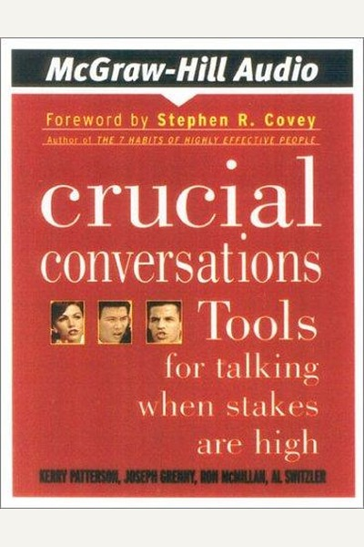

Library › Psychology & People
Crucial Conversations — Summary & Key Lessons

Tools for talking when stakes are high, opinions differ and emotions run strong.
📖 OPEN THE FULL INTERACTIVE BREAKDOWN →🌐 Read it in Hindi, Hinglish, Gujarati, Tamil & 22 more languages — free, with audio.
💡 The Big Idea
Crucial conversations — high stakes, opposing views, strong emotions — are where careers and relationships are won or lost. Most people either avoid them (silence) or attack (violence). The book's method: start with what you really want, make it safe for everyone to speak, separate facts from stories, and state your view without provoking defensiveness.
🧠 The 6 Key Lessons
Lesson 1: Start With Heart — Know What You Really Want
Chapter 1: What's a Crucial Conversation
Before entering any high-stakes talk, ask yourself: what do I really want for myself, for the other person, and for the relationship? Most people enter conversations wanting to win or punish, which guarantees losing. Clarity of intention steadies your behavior when the temperature rises.
📖 Example: A manager about to fire a team member catches herself wanting to 'show him who's boss'. Reframing to 'I want the project to succeed and him to leave with dignity' changes every sentence she says — from attack to clarity. Read the full example →
⚡ Do this: Write your three wants (self, other, relationship) before your next difficult conversation and keep them in front of you.
Lesson 2: Safety First — People Only Speak When Safe
Chapter 2: Make It Safe
When people feel attacked or humiliated, they shut down or fight back — not because they're irrational but because the conversation no longer feels safe. The fix is to restore safety: show mutual purpose ('we both want X') and mutual respect. Safety is the on-switch for honest dialogue.
📖 Example: When a colleague goes silent after criticism, the skilled responder says: 'I think we both want this project to succeed — can we look at the data together?' The moment purpose and respect are restored, the silence breaks. Read the full example →
⚡ Do this: In your next tense talk, pause and explicitly name the shared goal out loud before continuing.
Lesson 3: The Pool of Shared Meaning Decides Quality
Chapter 3: Shared Pool of Meaning
The authors compare dialogue to a pool: the more facts, opinions and feelings everyone contributes, the better the decision. Silence and sarcasm keep information out of the pool; violence pushes it in as shrapnel. Great decisions come from full pools, not from the loudest voice.
📖 Example: A team that nearly shipped a flawed product was saved when a junior engineer finally said 'I think the pricing model is broken' — the quietest person held the most important fact. Teams that welcome all contributions catch the errors that hierarchy hides. Read the full example →
⚡ Do this: In your next meeting, invite the quietest person's view by name, and count how many distinct facts entered the pool.
Lesson 4: Master Your Stories — Facts Don't Anger, Interpretations Do
Chapter 4: Master My Stories
Between a fact and your emotion sits a story you tell yourself: 'he ignored me because he disrespects me'. The authors show that feelings follow interpretations, not events — so retelling the story changes the feeling. Separate the observable fact from your invented narrative before reacting.
📖 Example: Your partner is late again. Story A: 'He doesn't care about me' → rage. Story B: 'He's overloaded at work' → concern. Same fact, different emotions. Asking 'what's the evidence for my story?' dissolves most anger before it reaches your mouth. Read the full example →
⚡ Do this: Next time you feel hot, write: the fact, my story, and two alternative stories. Then choose which story you can verify.
Lesson 5: STATE Your Path Without Provoking
Chapter 5: State My Path
When you must share a tough view, the authors' STATE method works: Share your facts (not conclusions), Tell your story tentatively, Ask for others' paths, Talk tentatively, Encourage testing. Facts are hard to argue with; conclusions are easy to attack. Deliver the message in a way that keeps the other person listening.
📖 Example: Instead of 'you're sloppy' (conclusion), say: 'I noticed three errors in the last report — I may be missing context, but I'm worried about quality. What am I not seeing?' The other person can respond to facts instead of defending their identity. Read the full example →
⚡ Do this: Rewrite your next piece of tough feedback: facts first, tentative story, and an explicit invitation for their view.
Lesson 6: Move to Action — Dialogue Without Decisions Is Chat
Chapter 6: Move to Action
Great dialogue must end with clarity: who does what by when, and how decisions were made. The authors warn that teams often confuse agreement with action — everyone nods, nobody moves. Assign ownership explicitly and decide how you'll decide (command, consult, vote, consensus) before the debate ends.
📖 Example: After a 'great meeting' where everyone agreed on a strategy but nobody was assigned to execute, the strategy died in a folder. Teams that close every dialogue with 'who, what, by when' convert talk into traction. Read the full example →
⚡ Do this: End your next discussion by writing: the decision, the owner, the deadline, and the follow-up date. Send it in writing.
✅ 5-Step Action Plan
- Write your three wants before every crucial conversation
- Name the shared goal out loud when tension rises
- Invite the quietest person's view by name in meetings
- Use the fact/story/alternative-stories check before reacting
- Close every important discussion with who-what-by-when in writing
⚠️ When This Doesn't Work
⚠️ When this doesn't work: The method assumes the other party engages in good faith — with narcissists, abusers or rigid hierarchies, 'safety first' can become appeasement. Some situations require exit, escalation or authority, not a better conversation. Use these tools where both sides have the power to choose.
💀 The Graveyard Proves It
🛬 Boeing 737 MAX — When the Sales Pitch Overrode the Software. Burn: 346 lives; $20B+; a legacy of trust. Read the full case study →
💬 Best Quotes from Crucial Conversations
- “The single biggest problem in communication is the illusion that it has taken place.”
- “When it matters most, we often perform at our worst.”
- “You can't make a good decision with a bad process.”
Interactive version: mark lessons as read, listen in your language, share quote cards.